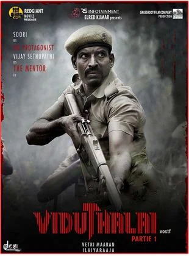

Viduthalai Movie Review: Vetrimaaran the Cinechef!

Rating:⭐⭐⭐
Vetrimaaran you beauty! After so long, he made another banger! The transformation from Soori being a full
on comedian to him being an actual hero, is unreal. Soori should definitely do more more heroic roles from now on
forth. Music and BGM by Ilayaraja was pretty good! This film is certainly not for everyone, since it has high violence and
misogny, but it's Vetrimaaran man, let the guy cook! Overall a sixer for Vetrimaaran!